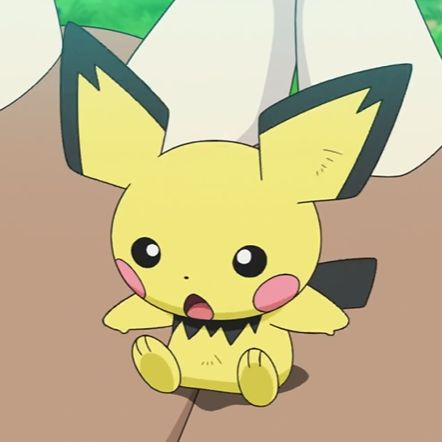
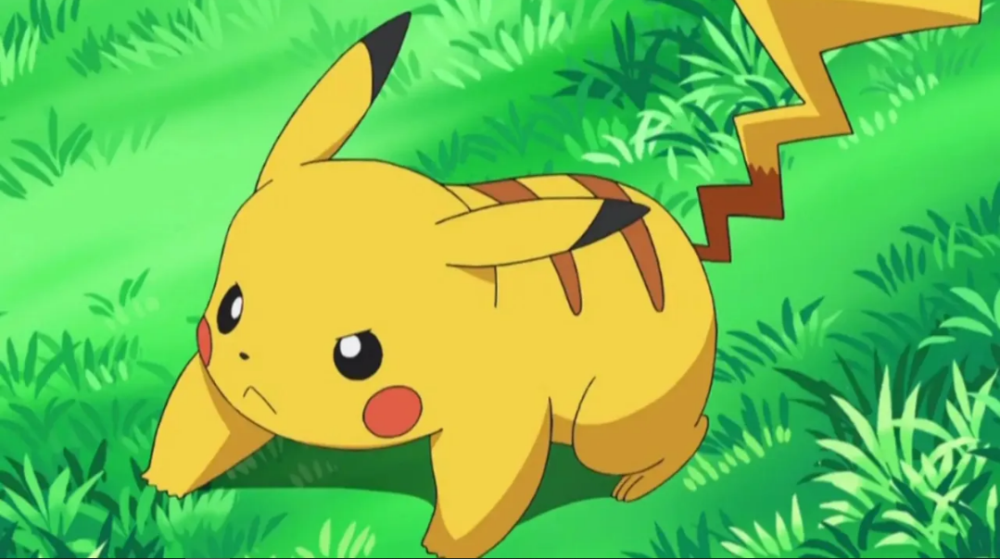
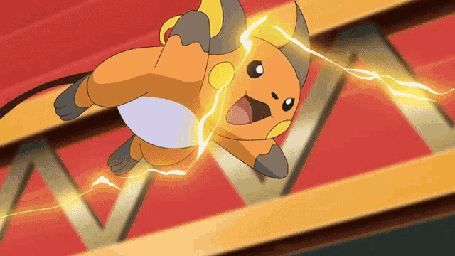

Pichu
Ainda está aprendendo a controlar sua eletricidade, às vezes pode dar pequenos choques acidentalmente.

Pikachu
É a forma evoluída de Pichu. É um Pokémon elétrico muito popular e é o mascote da franquia Pokémon. Pikachu é conhecido por sua habilidade de gerar eletricidade e armazená-la em suas bochechas. Ele é leal e corajoso, sempre pronto para ajudar seus amigos.
